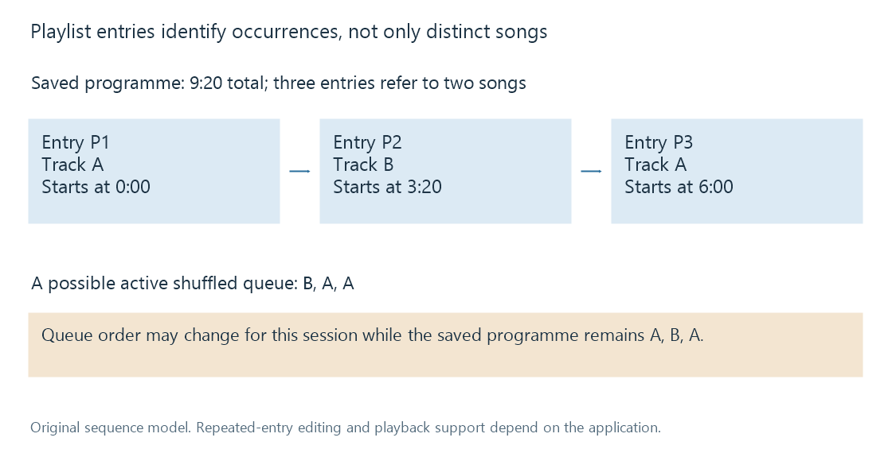

Media playlists
A playlist stores an ordered sequence of media references whose entries can differ from the distinct media items they point to.
Consider this short listening sequence:
| Entry | Media item | Duration | Start in the sequence |
|---|---|---|---|
| P1 | Track A | 3:20 | 0:00 |
| P2 | Track B | 2:40 | 3:20 |
| P3 | Track A again | 3:20 | 6:00 |
The programme lasts 9:20. It contains three entries but only two distinct songs. That difference is central to a playlist: an entry is an occurrence in a sequence, while an item is the media that occurrence refers to.
A list model can represent repeats; the editing and playback behavior of a particular server or app determines whether it retains them. Emby's playlist-items API distinguishes a returned item's identity from its PlaylistItemId. That provides context for operations on a playlist occurrence rather than on the song itself.
Order is part of the meaning
Moving P3 before P2 changes the listening sequence without changing either audio file. Removing P1 can leave the later occurrence of Track A in a list that supports repeated entries. Deleting Track A's resource affects both references.
This is different from a collection, where the primary statement is membership. A playlist can express a concert set, a sequence of exercises or a particular introduction to an artist. Its arrangement can be as important as the chosen items.

A reference still needs to resolve
A playlist may refer to local files by path, or to server catalogue items by ID. A file path is portable only where the same path meaning exists. A server item ID is meaningful only in the relevant server catalogue. An exported list can therefore preserve its labels while losing the ability to locate the resources elsewhere.
Some formats include both descriptive information and a location. The XSPF specification also provides identifiers and alternative location information to help resolve tracks. Those format capabilities explain why a playlist is more than a line of display text; they do not establish which formats Emby imports in every version.
A stored song title alone is an especially weak locator. Two performances can have the same title, and a translated or corrected label can change. Media identity remains important even for a small list.
Saved playlist and playback queue
The saved playlist describes the reusable sequence. The active queue describes the present playback session. Shuffling or skipping entries can affect the queue without necessarily editing the saved playlist. Likewise, a queue can contain an item added for this session that was never part of the stored list.
These states can diverge while both remain correct. The listener may want today's shuffled order and still expect tomorrow's playback to start with the original programme. Whether an interface saves a queue change is a product behavior, so the meaningful distinction is the state being changed.
Availability is evaluated at playback time. A referenced item can be temporarily unreachable, removed, or inaccessible to the current user. The sequence may still be intact as a description even when one entry cannot be played.